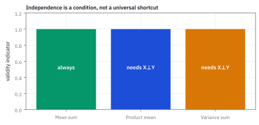
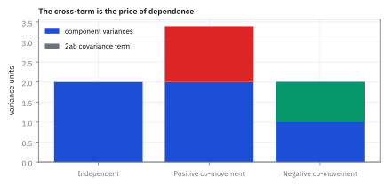
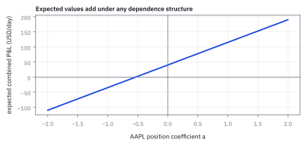
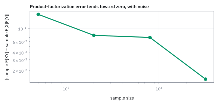

5.5 Rank, Range, and Invertibility
ดูว่าการแปลงเก็บข้อมูลไว้ครบหรือทำข้อมูลหาย
ตลาดมีสองสภาวะ ขายสินทรัพย์สามตัวที่จ่าย (1, 2), (2, 4) และ (3, 6) ดอลลาร์ในสภาวะที่ 1 และ 2 คุณมีภาระจ่าย \$10 ไม่ว่าสภาวะไหน hedge ได้พอดีไหม?
เฉลย: ไม่ได้ ทั้งสามตัวคือทิศ (1, 2) เดียวกันแค่คนละขนาด payoff ที่สร้างได้จึงเป็นเส้นเดียว ภาระ (10, 10) ต้องการ λ = 10 กับ λ = 5 พร้อมกัน ถ้าตลาดเพิ่มสินทรัพย์ที่จ่าย (3, 1) ให้ซื้อตัวแรก 4 หน่วยกับตัวใหม่ 2 หน่วย ได้ 10 พอดีทั้งสองสภาวะ
rank บอกจำนวนทิศทางที่ matrix ส่งต่อได้จริง range คือผลลัพธ์ทั้งหมดที่สร้างได้ invertibility คือการย้อนหา input ได้หนึ่งเดียว งาน quant ใช้ตรวจว่าตลาดให้ hedge อะไรได้บ้าง และตรวจ covariance ก่อนกลับด้าน
ศัพท์ที่ใช้ในหัวข้อนี้
- rank
- จำนวนทิศทางข้อมูลที่ independent จริงใน matrix ใช้วัด information ที่ matrix มีและตรวจ redundancy
- range
- เซตของ output ทั้งหมดที่ matrix สร้างได้จาก input ทุกตัว ใช้รู้ว่า target อยู่ในความสามารถของ mapping หรือไม่
- invertibility
- คุณสมบัติที่มี inverse ซึ่งคืน input จาก output ได้อย่าง unique ใช้แก้ระบบสมการและคำนวณ hedge weights
- singular matrix
- matrix ที่ rank ต่ำกว่าขนาดและไม่มี inverse ใช้เป็นสัญญาณว่า data มี redundant direction หรือ covariance มี zero-risk direction
- null space
- เซตของ input ที่ถูก matrix map ไปเป็นศูนย์ ใช้หา position combinations ที่ mapping มองไม่เห็น
- covariance matrix
- ตาราง covariance ระหว่าง asset returns ใช้คำนวณ portfolio variance และ risk allocation
- variance
- ค่าเฉลี่ยของ squared deviation จากค่าเฉลี่ยใช้วัดการกระจายของผลตอบแทนและคำนวณ portfolio risk
- row reduction
- การเอาแถวหนึ่งคูณตัวเลขแล้วลบออกจากอีกแถวเพื่อสร้างศูนย์ ใช้นับว่ามีแถวที่ให้ข้อมูลใหม่จริงกี่แถว ซึ่งคือ rank
- complete market
- ตลาดที่สินทรัพย์มีทิศพอจะสร้าง payoff ได้ทุกแบบในทุกสภาวะ ใช้บอกว่าภาระใด ๆ hedge ได้พอดีและมีวิธีเดียว
- shrinkage
- การดึง covariance ที่ประมาณมาเข้าหาเป้าหมายที่มีโครงสร้างและกลับด้านได้ ใช้แก้ covariance ที่ singular หรือเกือบ singular
- factor model
- การเขียน covariance ของหุ้นจำนวนมากผ่านปัจจัยร่วมไม่กี่ตัวบวกความเสี่ยงเฉพาะตัว ใช้ลดจำนวนตัวเลขที่ต้องประมาณจากข้อมูล
- principal component analysis (PCA)
- การหาทิศที่อธิบายการเคลื่อนไหวของข้อมูลได้มากที่สุดเรียงลงมา ใช้บอกว่าตลาดที่มีตั๋วหลายสิบตัวมีความเสี่ยงที่ต่างกันจริงกี่ทิศ
- QQQ
- กองทุนที่ติดตาม Nasdaq-100 ในตลาดสหรัฐฯ ใช้เป็น asset ตัวอย่างที่อาจซ้ำซ้อนกับหุ้น technology รายตัว
สัญลักษณ์ที่ใช้ในหัวข้อนี้
| สัญลักษณ์ | ความหมาย | หน่วย |
|---|---|---|
| $A$ | matrix ของ observations หรือ exposures | ตาม quantity ที่วัด |
| $\operatorname{rank}(A)$ | จำนวน independent directions ของ $A$ | นับทิศทาง |
| $\mathcal R(A)$ | range หรือ column space ของ $A$ | space ของ output |
| $A^{-1}$ | inverse เมื่อมีอยู่ | inverse ของหน่วย $A$ |
| $\Sigma$ | covariance matrix ของ daily returns | (decimal return)² ที่ horizon หนึ่งวัน |
| $r$ | vector ของ asset returns | decimal return ในหนึ่งวัน |
| $\hat{\mu}$ | vector ของ excess return ของสินทรัพย์ | decimal return |
| $S,\ \theta,\ X$ | ตาราง payoff (แถว = สภาวะ คอลัมน์ = สินทรัพย์), จำนวนหน่วยที่ถือ และภาระที่ต้องจ่าย | USD ต่อหน่วย, หน่วย, USD |
| $\lambda$ | ตัวเลขตัวเดียวที่บอกตำแหน่งบนเส้น payoff เมื่อ rank = 1 | USD |
| $N,\ T,\ R$ | จำนวนหุ้น จำนวนวัน และตารางผลตอบแทนขนาด T × N ที่หักค่าเฉลี่ยแล้ว | ตัว, วัน, decimal return |
| $\hat\Sigma,\ F,\ \delta,\ \Sigma^*$ | covariance ที่ประมาณได้ เป้าหมายแนวทแยง น้ำหนัก shrinkage และ covariance หลัง shrink | (decimal return)², ไม่มีหน่วยสำหรับ δ |
| $z$ | vector ใน null space ที่ส่งผลลัพธ์เป็นศูนย์ | unitless weight |
ที่มาที่ไป: เมื่อการแปลงทำข้อมูลหายไปอย่างเงียบ ๆ
ปัญหาที่ทำให้ต้องมีหัวข้อนี้เกิดขึ้นจริงในงานจัดพอร์ตแทบทุกที่ คือเมื่อจำนวนสินทรัพย์มากกว่าจำนวนวันที่มีข้อมูล
ในสถานการณ์นั้น ตารางความเสี่ยงที่คำนวณได้จะกลับด้านไม่ได้ในทางคณิตศาสตร์ แต่โปรแกรมจะไม่ฟ้อง มันจะคายตัวเลขออกมาให้ตามปกติ เพราะการปัดทศนิยมทำให้ดูเหมือนกลับได้
ผลคือน้ำหนักพอร์ตที่ได้ออกมาสุดโต่งอย่างไร้เหตุผล และเปลี่ยนไปคนละเรื่องเมื่อข้อมูลขยับนิดเดียว โดยที่ไม่มีข้อความเตือนใด ๆ เลย
หัวข้อนี้ให้เครื่องมือที่ตรวจอาการนั้นได้ก่อนที่จะเสียเวลาไปกับคำตอบที่ไร้ความหมาย
ความเป็นมา: จากการแก้ระบบสมการสู่ปัญหา rank deficiency ในพอร์ตการลงทุน
Carl Friedrich Gauss ในช่วงปี 1809 ได้พัฒนา Gaussian elimination เพื่อคำนวณวงโคจรดาวเคราะห์น้อย Ceres ในดาราศาสตร์ ต่อมา Camille Jordan ในปี 1870 และ Ferdinand Georg Frobenius ในปี 1879 ได้บัญญัติคำว่า rank ขึ้นเพื่อระบุมิติสูงสุดของแถวหรือคอลัมน์ที่เป็น linearly independent ต่อกันอย่างแท้จริง
ก่อนหน้า Frobenius นักคณิตศาสตร์ตัดสินว่าระบบสมการหาคำตอบได้หรือไม่โดยพึ่งพา determinant เพียงอย่างเดียว ซึ่งใช้ได้เฉพาะกับ square matrix เท่านั้น และไม่สามารถบอกได้ว่าในกรณีทั่วไปมีข้อมูลสูญหายไปกี่มิติ Rank จึงเข้ามาทำหน้าที่แทนโดยให้ข้อมูลครอบคลุม matrix ทุกขนาดผ่านมิติของ range
ในโลกการเงิน Harry Markowitz แสดงว่าการหาน้ำหนักพอร์ตที่เหมาะสมจำเป็นต้องหา inverse ของ covariance matrix แต่เมื่อจำนวนสินทรัพย์มีมากกว่าจำนวนวันที่มีข้อมูล ย่อมเกิดภาวะ rank deficiency ที่สร้าง null space ปลอมขึ้นมา ทำให้ optimizer สับสนและใส่ leverage มหาศาลในทิศทางที่ไร้ความหมาย
Worked Example — โจทย์และสิ่งที่ให้มา
โจทย์ให้อะไรมาบ้าง: ให้ columns ของ $A$ เป็น daily returns ของ AAPL, MSFT และ QQQ และให้ $\Sigma$ เป็น covariance matrix ของผลตอบแทนหน่วยของแต่ละผลตอบแทนเป็น decimal over one day และหน่วย covariance เป็น decimal-return squared ที่ horizon หนึ่งวัน ถ้า columns มี linear dependence ข้อมูลจะมี rank ต่ำและ inverse ที่ระบบต้องการอาจไม่มี
ขั้นที่ 1 — ลองกับฟิลเตอร์สีเทาก่อน: การแปลงที่ย้อนกลับไม่ได้ หน้าตาเป็นอย่างไร
ลองกับฟิลเตอร์ที่รวมสีแดงกับน้ำเงินเป็นสีเทาก่อน มันคือตารางแถวเดียว ใส่ภาพสองแบบเข้าไปแล้วดูว่าแยกออกไหม
ภาพแดงล้วน $(1,0)$ กับน้ำเงินล้วน $(0,1)$ ให้สีเทา 0.5 เท่ากัน เห็นแค่ 0.5 จึงบอกไม่ได้ว่ามาจากภาพไหน ข้อมูลหายไปหนึ่งทิศ
สามบรรทัดสุดท้ายคือทิศที่หายไป: $(1,-1)$ ถูกบีบเป็นศูนย์ เติมมันเข้าไปใน input เท่าไรก็ได้ output ไม่เปลี่ยน ทิศแบบนี้เรียกว่า null space และตราบใดที่มันมี การย้อนกลับก็ทำไม่ได้
ตารางนี้มีสองคอลัมน์แต่ส่งข้อมูลต่อได้แค่หนึ่งทิศ จำนวนทิศที่ส่งต่อได้คือ rank ซึ่งตรงนี้เท่ากับ 1
ขั้นที่ 2 — นิยามของ rank: นับทิศที่เหลือรอดหลังการแปลง
บรรทัดนี้เป็น นิยาม ของตัวเลขที่เราจะใช้ตอบคำถามหลัก คำถามคือการแปลงนี้ทำข้อมูลหายไปหรือเปล่า และเราวัดมันด้วยจำนวนทิศทางอิสระที่ยังเหลืออยู่ ในฝั่งผลลัพธ์ ถ้าคอลัมน์ไหนซ้ำกับคอลัมน์อื่น มันไม่ได้เพิ่มทิศใหม่ จึงไม่ถูกนับ
rank ของ $A$ คือ dimension ของ range หรือ column space; ถ้า columns independent rank จะเท่าจำนวน columns แต่ถ้ามี column ซ้ำ rank จะลดลง
ตัวอย่างในสไลด์ของคอร์ส: คอลัมน์ที่สองเป็นสามเท่าของคอลัมน์แรก
ไม่ว่าเลือก $x$ อะไร ผลคูณก็เป็นทวีคูณของ (1, 2) range จึงเป็นเส้นตรงเส้นเดียวที่ผ่านจุดกำเนิด rank เท่ากับหนึ่ง และ rank ของแถวเท่ากับ rank ของคอลัมน์เสมอ ไม่เกินจำนวนแถวหรือคอลัมน์ที่น้อยกว่า
matrix จัตุรัสขนาด $n$ กลับได้ก็ต่อเมื่อ rank เท่ากับ $n$ ตัวอย่างนี้ rank หนึ่งจากสอง จึงกลับไม่ได้ determinant เป็นศูนย์ยืนยันอีกทาง
ขั้นที่ 3 — ตลาดจากโจทย์เปิดเรื่อง: นับทิศที่ต่างกันจริงด้วย row reduction
ตาราง payoff มี 2 สภาวะ × 3 สินทรัพย์ ก่อนคิดเลข rank ไม่มีทางเกิน min(2, 3) = 2 แล้วใช้แถวบนลบออกจากแถวล่างเพื่อสร้างศูนย์ และดูคอลัมน์ประกอบ
แถวที่สองเริ่มด้วย 2 แถวแรกเริ่มด้วย 1 จึงใช้ตัวคูณ 2 ลบแล้วเหลือแถวศูนย์ทั้งแถว แถวที่ไม่เป็นศูนย์เหลือหนึ่งแถว ดูฝั่งคอลัมน์ก็ได้เลขเดียวกัน: คอลัมน์ 2 กับ 3 เป็นสองเท่าและสามเท่าของคอลัมน์ 1
แถวศูนย์แปลว่าสภาวะที่ 2 ไม่ให้ข้อมูลใหม่เลย ถือพอร์ตอะไรก็ตาม ผลในสภาวะ 2 เป็นสองเท่าของสภาวะ 1 เสมอ ตลาดนี้มีความไม่แน่นอนมิติเดียว ทั้งที่วาดตารางมาสองแถวและขายของสามตัว
ขั้นที่ 4 — range เป็นเส้นเดียว: สามตัวแปรยุบเหลือตัวเดียว
คิด Sθ ตรง ๆ สำหรับ θ อะไรก็ได้ แล้วตั้งชื่อก้อนที่โผล่ซ้ำ
θ ทั้งสามตัวมีผลผ่านก้อนเดียวคือ λ payoff จึงเป็น λ คูณ (1, 2) เสมอ range ของ S คือเส้นตรงเส้นเดียวในระนาบ สามพอร์ตในสี่บรรทัดล่างต่างกันหมดแต่ให้ payoff เดียวกันเป๊ะ
ตลาดแบบนี้ให้อิสระในการเลือกพอร์ตมากมาย แต่ไม่ให้อิสระในการสร้าง payoff เลย นี่คือความต่างระหว่างมีตัวเลือกเยอะกับมีข้อมูลเยอะ
ขั้นที่ 5 — hedge ภาระได้ไหม: เทียบภาระกับเส้น payoff
hedge พอดีแปลว่าหา θ ที่ Sθ = X ซึ่งก็คือถามว่า X อยู่บนเส้น λ(1, 2) หรือไม่
ภาระ (10, 10) ต้องการ λ สองค่าพร้อมกัน ไม่มี θ ใดทำได้ จึง hedge ไม่ได้ ส่วน (10, 20) อยู่บนเส้นพอดี hedge ได้ด้วย θ ใดก็ได้ที่ θ₁ + 2θ₂ + 3θ₃ = 10 เช่น (10, 0, 0), (0, 5, 0) หรือ (4, 0, 2) มีคำตอบไม่จำกัด
rank ไม่เต็มให้สองอาการพร้อมกัน ภาระส่วนใหญ่หลุดนอกเส้นจน hedge ไม่ได้เลย และภาระที่อยู่บนเส้นพอดี hedge ได้หลายวิธีเกินไป ระบบ hedge อัตโนมัติจึงต้องตรวจ rank ก่อน ไม่ใช่ปล่อยให้ solver สุ่มคำตอบมาให้
ขั้นที่ 6 — เงื่อนไข invertibility
ถ้าไม่ทำข้อมูลหาย ก็ย้อนกลับได้ สูตรข้างล่างทำให้ประโยคนั้นตรวจได้ โดยเดินทั้งสองทางของเครื่องหมายเท่ากับ ทางแรกบอกว่าอะไรพังเมื่อทิศไม่ครบ ทางที่สองบอกว่าอะไรใช้ได้เมื่อทิศครบ ขั้นถัดไปจะกางทางแรกให้เห็นเป็นตัวเลข
ทางแรกดูว่าอะไรพังเมื่อทิศไม่ครบ: จะมีทิศที่ถูกบีบจนเหลือศูนย์ บวกทิศนั้นเข้าไปใน input เท่าไรก็ได้ ผลลัพธ์ไม่ขยับเลย จึงมี input สองตัวที่ต่างกันแต่ให้ผลเดียวกัน การย้อนกลับจากผลลัพธ์จึงเลือกไม่ถูกว่าจะเป็นตัวไหน นั่นคือความหมายของคำว่าไม่มีตัวย้อนกลับ
ทางที่สองกลับกัน: เมื่อทิศครบ คอลัมน์ปูเต็มปริภูมิผลลัพธ์ ทุกเป้าหมายจึงเขียนได้ และเขียนได้แบบเดียว พอจับคู่กันหนึ่งต่อหนึ่งทั้งสองทาง ตัวย้อนกลับก็มีอยู่จริง
ขั้นที่ 7 — null space ทำให้ solution ไม่ unique
ถ้าทำข้อมูลหาย จะมีทิศทางที่ถูกบีบเป็นศูนย์ ห้าบรรทัดนี้แสดงผลที่ตามมาทีละขั้น ในงานจริงนี่คือสาเหตุที่ optimizer คืนน้ำหนักพอร์ตคนละชุดทุกครั้งที่รัน ทั้งที่ข้อมูลเดิม เพราะ covariance ที่ป้อนเข้าไปมีทิศที่ซ้ำกัน
สมมติว่ามีทิศที่ไม่เป็นศูนย์ แต่ถูกการแปลงบีบจนเหลือศูนย์ แล้วดูว่าเกิดอะไรขึ้น การแปลงกระจายเข้าไปในผลบวกได้ และดึงตัวคูณออกมาข้างหน้าได้ ทั้งสองข้อมาจากนิยามในหัวข้อ 5.3
พอแทนสมมติฐานลงไป ก้อนที่เติมเข้ามากลายเป็นศูนย์ ไม่ว่าจะใส่ทิศนั้นเข้าไปแรงแค่ไหน ผลลัพธ์ก็ไม่ขยับเลย จึงมี input เป็นอนันต์ที่ให้คำตอบเดียวกัน นั่นคือความหมายของคำว่าคำตอบไม่ unique และในงานจริงคือสาเหตุที่ optimizer คืนน้ำหนักคนละชุดทุกครั้งที่รัน ทั้งที่ข้อมูลเดิม
ขั้นที่ 8 — covariance ที่ singular
ปัญหานี้เกิดจริงบนโต๊ะเมื่อจำนวนสินทรัพย์มากกว่าจำนวนวันที่มีข้อมูล และเป็นเหตุผลที่ต้องมี shrinkage ในบทหลัง
$\sigma^2$ คือ variance ของ daily return หน่วย decimal-return squared เมื่อสองผลตอบแทนเหมือนกันทุกครั้ง covariance matrix มี determinant เป็นศูนย์และ rank หนึ่ง จึงไม่มี inverse
ทำไม determinant ศูนย์แปลว่ากลับด้านไม่ได้ (กรณี 2×2): $\det=ad-bc$ เป็นศูนย์ก็ต่อเมื่อคอลัมน์ $(a,c)$ กับ $(b,d)$ ขนานกัน คือคอลัมน์หนึ่งเป็นตัวคูณของอีกคอลัมน์ ที่นี่ $1\cdot1-1\cdot1=0$ และคอลัมน์ทั้งสองคือ $(1,1)$ เหมือนกันเป๊ะ ฟิลเตอร์สีเทาในขั้นที่ 1 ก็เป็นเรื่องเดียวกัน
ขั้นที่ 9 — เมื่อกลับได้ ก็เขียนตัวกลับของ $2\times2$ ออกมาตรง ๆ
ขั้นที่ 6 ตอบว่ากลับได้เมื่อไร ขั้นนี้ตอบว่ากลับแล้วหน้าตาเป็นอย่างไร สำหรับ $2\times2$ ซึ่งเป็นขนาดที่ต้องคำนวณด้วยมือบ่อยที่สุด ทั้งในหัวข้อ 7.1, 12.5 และ 17.3
ตัวกลับไม่ได้มาจากการท่องจำ มันคือคำตอบของคำถามว่า ต้องคูณอะไรถึงจะได้หลักแรกของ identity กลับมา จึงตั้งเป็นระบบสมการสองบรรทัดแล้วแก้ตรง ๆ
วิธีแก้คือกำจัดตัวแปรทีละตัว คูณไขว้แล้วลบกัน ตัวที่ไม่ต้องการหายไป และสิ่งที่โผล่ขึ้นมาเป็นตัวคูณหน้าตัวแปรทั้งสองรอบคือ $ad-bc$ ก้อนเดียวกัน
ก้อนนั้นคือ determinant และตรงนี้เองที่เห็นว่าทำไมมันสำคัญ ถ้ามันเป็นศูนย์ สมการกลายเป็น $0=d$ ซึ่งแก้ไม่ได้ ตรงกับขั้นที่ 6 ที่บอกว่า rank ไม่เต็มแล้วกลับไม่ได้ ไม่ใช่กฎสองข้อ แต่เป็นข้อเดียวกันมองคนละมุม
ทำซ้ำกับหลักที่สองของ identity จะได้อีกสองช่องที่เหลือ ประกอบกันเป็นรูปที่จำง่าย สลับแนวทแยง กลับเครื่องหมายนอกแนวทแยง แล้วหารด้วย determinant
ขั้นที่ 10 — ตลาดจากโจทย์เปิดเรื่อง: det = 0 แล้วเพิ่มสินทรัพย์ที่ต่างจริง
ตัดตลาดเหลือสินทรัพย์ 1 กับ 2 ได้ตาราง 2 × 2 ลองสูตรตัวกลับจากขั้นที่ 9 แล้วเทียบกับตลาดที่เพิ่มสินทรัพย์จ่าย (3, 1)
det B = 0 เพราะคอลัมน์ (1, 2) กับ (2, 4) ขนานกัน สองสินทรัพย์เป็นตัวเดียวกันคนละขนาด ตัวคูณหน้าสูตรกลายเป็น 1/0 จึงไม่มีตัวกลับ ในเรขาคณิต |det| คือพื้นที่สี่เหลี่ยมด้านขนานที่สองคอลัมน์ขึง ขนานเมื่อไรพื้นที่ก็เป็นศูนย์
สินทรัพย์ใหม่จ่ายเยอะในสภาวะ 1 ตรงข้ามกับของเดิม det = −5 ไม่เป็นศูนย์ rank เต็ม ภาระ (10, 10) ที่เมื่อกี้ hedge ไม่ได้ ตอนนี้ได้พอดีด้วยการซื้อ 4 กับ 2 หน่วย และมีวิธีเดียว ตลาดกลายเป็น complete market
คุณค่าของสินทรัพย์ใหม่จึงไม่ได้อยู่ที่ผลตอบแทน แต่อยู่ที่ว่ามันเพิ่มทิศให้ตลาดหรือเปล่า นี่คือเหตุผลที่ option มีอยู่จริง
ขั้นที่ 11 — Drill: กลับ covariance $2\times2$ แล้วกาง quadratic form
ตรวจเองใน 20 วินาที: $\det$ ต้องได้ 1, ผลคูณกลับต้องได้ identity, และพจน์ไขว้ต้องเป็นลบสองเท่า ถ้าเครื่องหมายนอกแนวทแยงหลุด quadratic form จะกลายเป็นบวก ซึ่งแปลว่าสองสินทรัพย์สวนทางกันแทนที่จะไปด้วยกัน
ลองกับตัวเลขจริงหนึ่งรอบ แล้วรูปแบบจะติดมือ determinant ของ $2\times2$ คือคูณแนวทแยงหลักลบคูณแนวทแยงรอง ได้ 1 พอดี ซึ่งทำให้ตัวหารหายไปและอ่านคำตอบได้ทันที
อย่าข้ามบรรทัดที่สาม คูณกลับเพื่อตรวจว่าได้ identity จริง ใช้เวลาสิบวินาที และจับความผิดพลาดเรื่องเครื่องหมายได้เกือบทุกครั้ง
สองบรรทัดล่างกาง quadratic form ออกเป็นพหุนาม คูณจากขวาไปซ้ายก่อนเพื่อให้เหลือ vector เดียว แล้วค่อยจับคู่กับ $x^{\mathsf T}$ พจน์ไขว้โผล่สองครั้งเท่ากัน จึงรวมเป็นสองเท่า
ก้อนสุดท้ายนี้คือสิ่งที่ไปนั่งอยู่ในเลขชี้กำลังของ density ในหัวข้อ 7.1 ใครกางมันได้ในหัว ก็เขียน density ของ normal สองตัวแปรออกมาได้โดยไม่ต้องเปิดตำรา
ขั้นที่ 12 — การคำนวณน้ำหนักพอร์ตผ่าน inverse และผลกระทบเมื่อ matrix ขาด rank
ตัวอย่างนี้แสดงบทบาทของ invertibility ในการคำนวณพอร์ต Mean-Variance โดย $\Sigma$ คือ covariance matrix ขนาด $2\times 2$ และ $\hat{\mu}$ คือ excess return
เงื่อนไขบังคับคือ matrix ต้องเป็น full rank ซึ่งตรวจได้จาก determinant ที่ต้องไม่เป็นศูนย์ หาก rank บกพร่อง inverse จะไม่มีอยู่จริง และสมการหาน้ำหนักพอร์ตจะไม่มีคำตอบเดียว ในโปรแกรมคำนวณทั่วไป ความพยายามหา inverse ของ matrix ที่ singular จะส่งผลให้น้ำหนักพุ่งเข้าสู่อินฟินิตี้และพอร์ตพังทลาย
เมื่อ covariance matrix มี full rank เราสามารถหา determinant ซึ่งได้ 0.0016 และกลับ matrix ได้อย่างแม่นยำ น้ำหนักพอร์ตที่ได้จะสะท้อนผลตอบแทนส่วนเกินเทียบกับความเสี่ยงจริง
เมื่อคูณ inverse เข้ากับ vector ของ excess return ตัวเลขจะถูกจัดสรรไปยังสินทรัพย์ตัวแรกทั้งหมด 2.0 หน่วย และไม่ถือสินทรัพย์ตัวที่สองเลย เพราะสินทรัพย์ตัวแรกให้ผลตอบแทนคุ้มค่าความเสี่ยงกว่า
หากสินทรัพย์ทั้งสองเคลื่อนไหวซ้ำซ้อนกันจน determinant เป็นศูนย์ matrix จะกลายเป็น singular ทันที ทิศทาง $z = [1, -1]^{\mathsf T}$ จะกลายเป็น null space ที่ variance เป็นศูนย์ ทำให้ไม่สามารถหา inverse ได้และระบบจัดสรรพอร์ตจะล้มเหลว
แล้วเอาไปใช้ทำอะไรได้จริงบ้าง
การรู้ว่าการแปลงทำข้อมูลหายหรือไม่ ป้องกันความผิดพลาดที่หาสาเหตุยากที่สุด
ใช้ตรวจว่า covariance ที่ประมาณมาใช้งานได้จริงหรือไม่ ก่อนจะเอาไปกลับด้านในการจัดพอร์ต
ใช้บอกว่าปัญหามีคำตอบเดียวหรือมีหลายคำตอบ ซึ่งถ้ามีหลายคำตอบแปลว่าต้องเพิ่มเงื่อนไข
ใช้วินิจฉัยเวลาผลลัพธ์ของการจัดพอร์ตเหวี่ยงแรงผิดปกติ ซึ่งมักเกิดจากตารางที่เกือบกลับด้านไม่ได้
ขั้นที่ 13 — หุ้น 500 ตัว ข้อมูล 250 วัน: นับก่อนว่าขออะไรจากข้อมูล
จะหาพอร์ตที่ความเสี่ยงต่ำสุดของหุ้น N = 500 ตัว สูตรต้องใช้ตัวกลับของ covariance ประมาณจากผลตอบแทนรายวัน T = 250 วัน คือข้อมูลราวหนึ่งปี (ปีจริงมี 250 ถึง 252 วันเทรดตามหัวข้อ 1.1 งานความเสี่ยงมักปัดข้อมูลหนึ่งปีเป็น 250 วัน) ด้วย Σ̂ = RᵀR / T แล้วโปรแกรมขึ้นว่า singular matrix ก่อนดูตัวเลขสักตัว ให้นับกับเหตุผลเรื่อง rank
Σ สมมาตร ตัวเลขที่ต้องประมาณจึงเป็นครึ่งตารางรวมแนวทแยง 125,250 ตัว แต่ข้อมูลมีทั้งหมด 125,000 ตัว น้อยกว่าสิ่งที่ขอ และยังนับแบบใจดี เพราะข้อมูลรายวันมีสัญญาณรบกวนสูง
บรรทัดที่ห้าถึงแปดแสดงว่า RᵀR กับ R ส่งทิศเดียวกันไปเป็นศูนย์ จึงมี rank เท่ากัน R มี 250 แถว rank ได้ไม่เกิน 250 Σ̂ ขนาด 500 × 500 จึงขาดอย่างน้อย 250 ทิศ ข้อสรุปนี้จริงไม่ว่าข้อมูลจะดีแค่ไหน ถ้า T น้อยกว่า N ก็ singular เสมอ ตอบได้แน่นอนก่อนรันโปรแกรม
ขั้นที่ 14 — ย่อส่วนให้เห็นกับตา: หุ้น 2 ตัว ข้อมูล 1 วัน และพอร์ตผีที่ความเสี่ยงเป็นศูนย์
สัดส่วนเดียวกันคือข้อมูลน้อยกว่าหุ้น ผลตอบแทนวันนั้น r = (0.02, 0.01) Σ̂ = rrᵀ คือหน้าตาของ vvᵀ ในหัวข้อ 5.3
√0.0004 = 0.02 คือผลตอบแทนวันนั้นพอดี model บอกว่าหุ้นตัวแรกผันผวน 2% ต่อวันจากข้อมูลจุดเดียว row reduction เหลือแถวไม่เป็นศูนย์หนึ่งแถว det เป็นศูนย์ สูตรตัวกลับต้องหารด้วยศูนย์ นี่คือที่มาของข้อความ singular
พอร์ต long ตัวแรก 1 หน่วย short ตัวที่สอง 2 หน่วยได้ความเสี่ยงศูนย์ เพราะข้อมูลวันเดียวบังเอิญให้ผลตอบแทนพอร์ตเป็นศูนย์พอดี optimizer ที่หาความเสี่ยงต่ำสุดจะเจอพอร์ตนี้แล้วขยาย 10 เท่า 100 เท่า ความเสี่ยงที่คำนวณได้ยังเป็นศูนย์ ได้ leverage อนันต์ ไม่ใช่ optimizer ผิด แต่ข้อมูลบอกว่ามีของฟรี
ขั้นที่ 15 — แก้ด้วย shrinkage: ดึงเข้าหาแนวทแยงแล้วกลับด้านได้
Ledoit–Wolf shrinkage ผสม Σ̂ กับเป้าหมาย F ที่กลับด้านได้แน่นอน เลือก F เป็นแนวทแยงของ Σ̂ ซึ่งคือสมมติว่าไม่มี correlation และใช้ δ = 0.20
แนวทแยงไม่ขยับเลย ขยับแค่นอกแนวทแยง det = ad − bc เป็นศูนย์เพราะ bc ใหญ่เท่ากับ ad พอดี shrinkage หด b กับ c ลง 20% จาก 0.0002 เป็น 0.00016 ผลคูณ bc จึงหดลง 36% ขณะที่ ad ไม่ขยับ det จึงบวกขึ้นมาจากศูนย์ทันที
ในภาษาการเงินคือ อย่าเชื่อ correlation ที่ประมาณมาเต็ม ๆ เพราะเป็นส่วนที่มีสัญญาณรบกวนมากที่สุด ส่วนความผันผวนรายตัวบนแนวทแยงประมาณได้แม่นกว่ามาก จึงไม่ต้องแตะ
ขั้นที่ 16 — shrinkage ทำให้คำนวณได้ แต่ทำให้ถูกหรือเปล่า
ตรวจสามอย่าง: พอร์ตผีตอนนี้เสี่ยงเท่าไร พอร์ตความเสี่ยงต่ำสุดหน้าตาอย่างไร และถ้าใช้ δ น้อยลงเกิดอะไรขึ้น
พอร์ตผีกลับมามีความเสี่ยง 1.265% ต่อวัน ไม่ฟรีอีกต่อไป แต่พอร์ตความเสี่ยงต่ำสุดยังสั่ง short หุ้นแรก 33% เพื่อ long ตัวที่สอง 133% จากข้อมูลวันเดียว และถ้าใช้ δ = 0.01 ช่องแรกของตัวกลับพุ่งจาก 6,944 เป็น 125,628 หรือ 18 เท่า ขนาดตำแหน่งที่ optimizer สั่งก็โตตาม
shrinkage ไม่ได้เสกข้อมูลขึ้นมา มันแค่ยอมรับว่าไม่รู้ แล้วดึงคำตอบเข้าหาสิ่งที่มีโครงสร้าง ได้ตัวเลขที่คำนวณได้และนิ่งขึ้น แต่ถ้า T น้อยเกินไปจริง คำตอบก็ยังไร้สาระ กฎนิ้วโป้งคือ T ≥ 2N หุ้น 500 ตัวต้องการข้อมูลอย่างน้อย 1,000 วันหรือราว 4 ปี ซึ่งนานพอที่ correlation จะเปลี่ยนไปแล้ว
ทางแก้ที่ใช้จริง และจำนวนตัวเลขที่แต่ละทางต้องประมาณ
คำถาม: หุ้น 500 ตัว ข้อมูล 250 วัน ถ้าไม่ใช้ Σ̂ ตรง ๆ มีทางไหนบ้าง และแต่ละทางต้องประมาณตัวเลขกี่ตัว?
ของที่มี: 125,250 ตัวเลขของ Σ̂ เต็ม จากขั้นที่ 13
1. Shrinkage Σ* = (1 − δ)Σ̂ + δF โดยเลือก δ ด้วยสูตรปิดของ Ledoit–Wolf หรือ cross-validation ทำได้ทันทีแต่ไม่อธิบายว่าความเสี่ยงมาจากไหน
2. Factor model Σ = BΩBᵀ + D ใช้ 4 ปัจจัย: 500 × 4 + 4(5)/2 + 500 = 2,000 + 10 + 500 = 2,510 ตัวเลข น้อยกว่า 125,250 ราว 50 เท่า และกลับด้านได้ถ้า D บวกทุกช่อง
3. PCA เก็บทิศใหญ่ 10 ถึง 20 ทิศแรกแล้วทิ้งที่เหลือ ซึ่งต้องใช้ eigenvalue ในหัวข้อ 5.6
4 เพิ่มค่าบนแนวทแยง Σ̂ + λI เช่น λ = 0.00002 กับตัวอย่างสองหุ้น det = 0.00042(0.00012) − 0.0002² = 5.04 × 10⁻⁸ − 4 × 10⁻⁸ = 1.04 × 10⁻⁸ ไม่เป็นศูนย์
เฉลย: factor model ลดจาก 125,250 เหลือ 2,510 ตัวเลข ส่วน shrinkage และการเพิ่มแนวทแยงทำให้กลับด้านได้โดยไม่ลดจำนวนตัวเลข
เช็ก 10 วินาที: 500 × 501 / 2 = 125,250 และ 250 × 500 = 125,000
งานจริง: rank คือจำนวนความเสี่ยงที่ตลาดให้ซื้อขายได้จริง ซึ่งมักน้อยกว่าจำนวนตั๋วบนกระดานมาก พันธบัตรรัฐบาล 40 รุ่นบนหน้าจอ PCA มักบอกว่า 97% ของการเคลื่อนไหวอธิบายได้ด้วย 3 ทิศคือ level, slope, curvature จึง hedge ได้จริงราว 3 มิติ ที่เหลือคือ basis risk
กับดัก: rank ไม่เกิน min(m, d) เสมอ ตลาดสองสภาวะต่อให้ขายสินทรัพย์ 500 ตัว rank ก็ไม่เกิน 2 เพิ่มจำนวนสินทรัพย์ไม่ได้เพิ่มความสามารถในการ hedge ต้องเพิ่มทิศใหม่เท่านั้น
โค้ดตรวจ rank ตัวกลับ และ shrinkage
import numpy as np
S=np.array([[1,2,3],[2,4,6]]); assert np.linalg.matrix_rank(S)==1
C=np.array([[1,3],[2,1]]); assert abs(np.linalg.det(C)+5)<1e-9
assert np.allclose(np.linalg.inv(C),[[-.2,.6],[.4,-.2]]) and np.allclose(np.linalg.solve(C,[10,10]),[4,2])
r=np.array([.02,.01]); Sh=np.outer(r,r); w=np.array([1.,-2.])
assert np.linalg.matrix_rank(Sh)==1 and abs(w@Sh@w)<1e-15
St=.8*Sh+.2*np.diag(np.diag(Sh))
assert abs(np.linalg.det(St)-1.44e-8)<1e-15
assert np.allclose(np.linalg.inv(St),[[6944.44,-11111.11],[-11111.11,27777.78]],atol=0.01)
assert abs(np.sqrt(w@St@w)-0.012649)<1e-6
x=np.linalg.solve(St,np.ones(2)); assert np.allclose(x/x.sum(),[-1/3,4/3])โค้ดนี้ตรวจ rank 1 ของตลาดสามสินทรัพย์ det −5 และ θ = (4, 2) covariance วันเดียวที่ singular พร้อมพอร์ตผี และตัวเลขหลัง shrinkage ทั้ง det ตัวกลับ ความเสี่ยงพอร์ตผี และน้ำหนัก −33% กับ 133%
Figure 5.5a — rank ไม่เต็มคือคอลัมน์ที่ซ้อนทับกัน

column สองเป็นสองเท่าของ column หนึ่งทุก observation จุดทั้งหมดจึงอยู่บนเส้นเดียว แม้ matrix มีสอง columns แต่มี independent direction เพียงหนึ่ง
Figure 5.5b — ทิศที่สร้างได้ กับทิศที่หายไป

สำหรับ symmetric map $A=\begin{bmatrix}1&1\\1&1\end{bmatrix}$, output ไปได้เพียงตาม range $\operatorname{span}\{[1,1]^\top\}$ ส่วน input direction $[1,-1]^\top$ อยู่ใน null space และถูก map เป็นศูนย์ ภาพซ้อน input space กับ output space ซึ่งต่างหน้าที่กันไว้ในพิกัดเดียวเพื่อให้เห็นทิศตั้งฉาก; นี่คือเหตุผลที่ output ย้อนหา input เดียวไม่ได้
Figure 5.5c — วงรี covariance ที่แบนจนไม่มีความหนา

เมื่อผลตอบแทนสองตัว correlated เท่ากับหนึ่ง risk ellipse ยุบเหลือเส้น $r_1=r_2$ และมีความกว้างศูนย์ในทิศตั้งฉาก จึงไม่มี inverse ให้คำนวณ
Figure 5.5d — rank บอกว่าข้อมูลที่ใช้ได้จริงมีกี่ทิศ

เพิ่ม asset ที่เป็นสำเนาทำให้จำนวน columns โตจากหนึ่งเป็นสาม แต่ rank ค้างที่หนึ่ง ข้อมูลมากช่องขึ้นจึงไม่ได้แปลว่ามี information direction มากขึ้น
คำตอบ — determinant เป็นศูนย์ จึงกลับ matrix ไม่ได้
คำตอบ: covariance ตัวอย่างมี determinant เท่ากับศูนย์และ rank เท่ากับ 1 จึงไม่มี inverse; สอง columns นำข้อมูลทิศเดียวกันมาซ้ำ
ตรวจเองใน 10 วินาที: คูณ matrix [[1,1],[1,1]] ด้วย vector [1,-1] ต้องได้ [0,0] vector ที่ไม่เป็นศูนย์แต่ถูกส่งเป็นศูนย์พิสูจน์ว่ามี null direction และ solution ไม่ unique
ใช้ตัดสินใจ: ถ้า QQQ เป็น linear combination ของ AAPL กับ MSFT จริง ให้ตัด factor ซ้ำหรือใช้ regularization ที่ประกาศไว้ ห้ามเติมเลขเล็ก ๆ เงียบ ๆ แล้วเรียกความเสี่ยงว่า stable
กับดัก: rank ต่ำแปลว่าไม่มี data
rank deficiency ไม่ได้แปลว่า matrix ว่าง แต่แปลว่าข้อมูลมี directions ซ้ำหรือถูกบีบอยู่ใน subspace การลบ asset แบบสุ่มอาจทิ้ง signal ที่ดี ควรระบุ null direction และ business meaning ก่อนแก้
ข้อจำกัด: วิธีนี้สมมติอะไร และของจริงเป็นอย่างไร
| เรื่อง | วิธีนี้สมมติว่า | ของจริงเป็นอย่างไร | ผลที่ตามมาเวลาใช้งาน |
|---|---|---|---|
| การตรวจ | ตรวจได้ชัดว่ากลับด้านได้หรือไม่ | ของจริงมักเกือบกลับด้านไม่ได้ | คำตอบแบบใช่หรือไม่ใช่ไม่พอ ต้องดูว่าใกล้ขอบแค่ไหน |
| ความแม่นของเครื่อง | การคำนวณแม่น | การปัดเลขทำให้ตารางที่ควรกลับด้านไม่ได้ ดูเหมือนกลับได้ | โปรแกรมจะให้คำตอบออกมาโดยไม่เตือน ทั้งที่ตัวเลขนั้นไร้ความหมาย |
| จำนวนข้อมูล | มีข้อมูลมากพอ | สินทรัพย์มากกว่าจำนวนวัน ทำให้กลับด้านไม่ได้แน่นอน | ต้องแก้ด้วยการลดมิติหรือการผสมค่า ซึ่งคือหัวข้อ 17.4 และ 17.8 |
แถวกลางคือกับดักที่อันตรายที่สุด เพราะไม่มีข้อความแจ้งเตือนใด ๆ เลย
สรุปที่ใช้ได้จริง
- rank คือจำนวน independent directions และ range คือ output space ที่ mapping สร้างได้
- square matrix invertible ก็ต่อเมื่อ full rank
- null space ทำให้ input หลายตัวให้ output เดียวกัน
- covariance matrix ที่ singular ไม่มี inverse และควรเป็น data/model alert
- ตลาดสามสินทรัพย์ (1, 2), (2, 4), (3, 6) มี rank 1: ภาระ (10, 10) hedge ไม่ได้ ภาระ (10, 20) hedge ได้ไม่จำกัดวิธี เพิ่มสินทรัพย์ (3, 1) แล้ว det = −5 และ θ = (4, 2) มีวิธีเดียว
- หุ้น 500 ตัวจากข้อมูล 250 วันต้องประมาณ 125,250 ตัวเลขจาก 125,000 ตัว covariance จึง singular เสมอ shrinkage ทำให้กลับด้านได้ (det 1.44 × 10⁻⁸ ในตัวอย่างสองหุ้น) แต่ไม่ได้เสกข้อมูลขึ้นมา